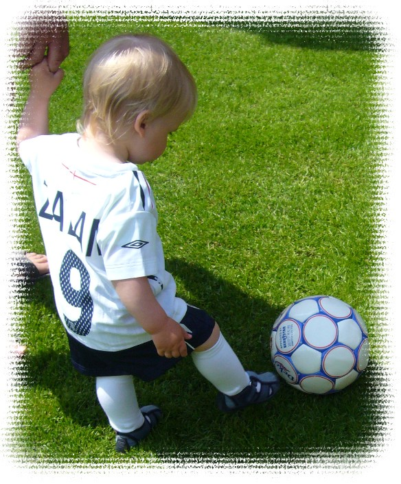
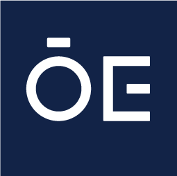

Bemutatkozás
Zab Zalán vagyok, 20 éves, a Székesfehérvári SZC Széchenyi István Technikum 13. évfolyamos
tanulója ipari informatikai technikus szakon.
Már a tanulmányaim kezdetétől fogva érdekelt az informatika világa, különösen azok a
technológiák,
amelyek a mindennapi életünket teszik kényelmesebbé és hatékonyabbá. Kifejezetten közel áll
hozzám az automatizálás és az okosotthon-megoldások területe,
mivel ezek jól szemléltetik, hogyan kapcsolódik össze a szoftver, az elektronika és a modern
technológia a hétköznapokban.
Személyiségemet leginkább a kíváncsiság, a problémamegoldó gondolkodás és a kitartás jellemzi. Szeretek új dolgokat megérteni, rendszereket átlátni, majd megoldást találni az előttem álló kihívásokra. Számomra a fejlődés egyik legfontosabb része az, hogy mindig nyitott legyek az új ismeretekre, és folyamatosan bővítsem a tudásomat.
Nyelvek
A tanulmányaim mellett fontos számomra a nyelvtanulás is. Angolul beszélek, és a jövőben szeretnék spanyolul is megtanulni, mivel érdekelnek a különböző kultúrák és fontosnak tartom, hogy nemzetközi környezetben is magabiztosan tudjak kommunikálni.
Szabadidő és érdeklődés
Szabadidőmben szeretek utazni és új helyeket felfedezni. A sport szintén meghatározó része az életemnek: a futball már kisgyerekkorom óta jelen van az életemben, és hosszú ideig aktívan is fociztam. A sport sokat tanított a kitartásról, a csapatmunkáról és arról, hogy a folyamatos fejlődéshez idő és elkötelezettség szükséges.

Jövőbeli célok
A jövőben szeretném tovább mélyíteni a tudásomat az informatikai és mérnöki területen, ezért célom, hogy a Óbudai Egyetem hallgatója legyek. Úgy gondolom, hogy a kíváncsiság, a folyamatos tanulás és az új technológiák iránti érdeklődés segít abban, hogy hosszú távon is fejlődni tudjak ezen a területen.


.png)